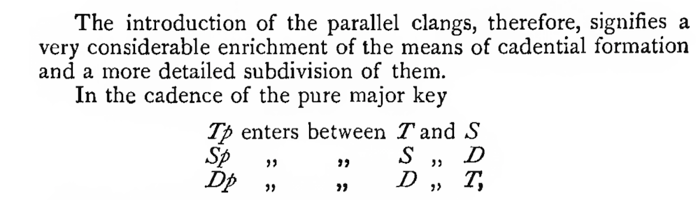
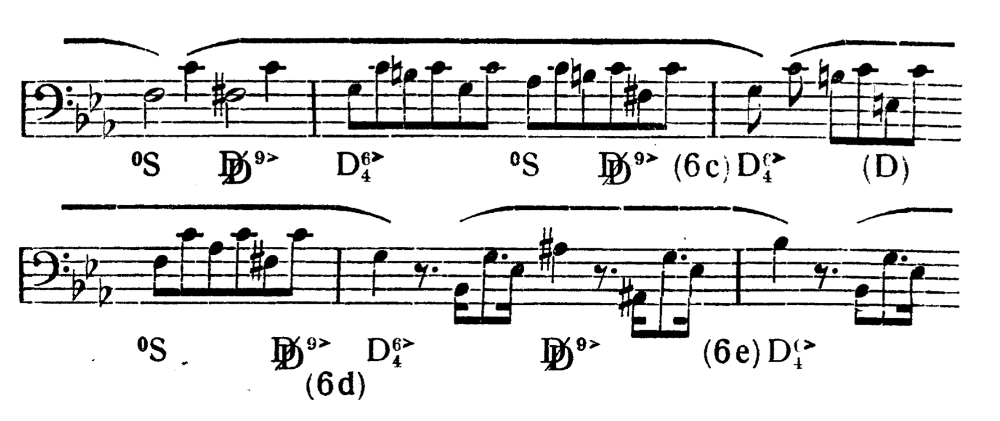
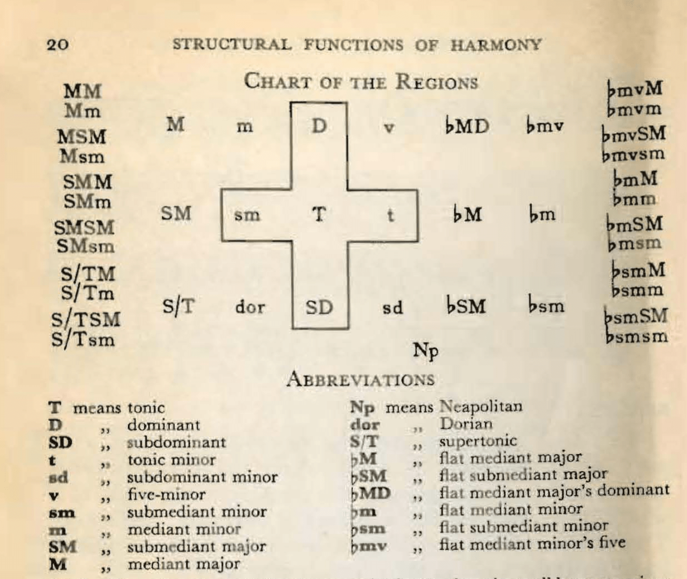
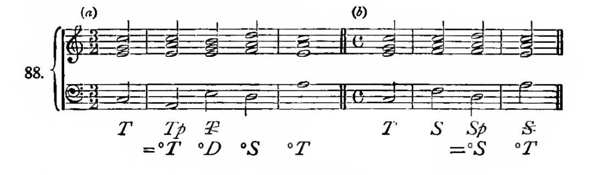
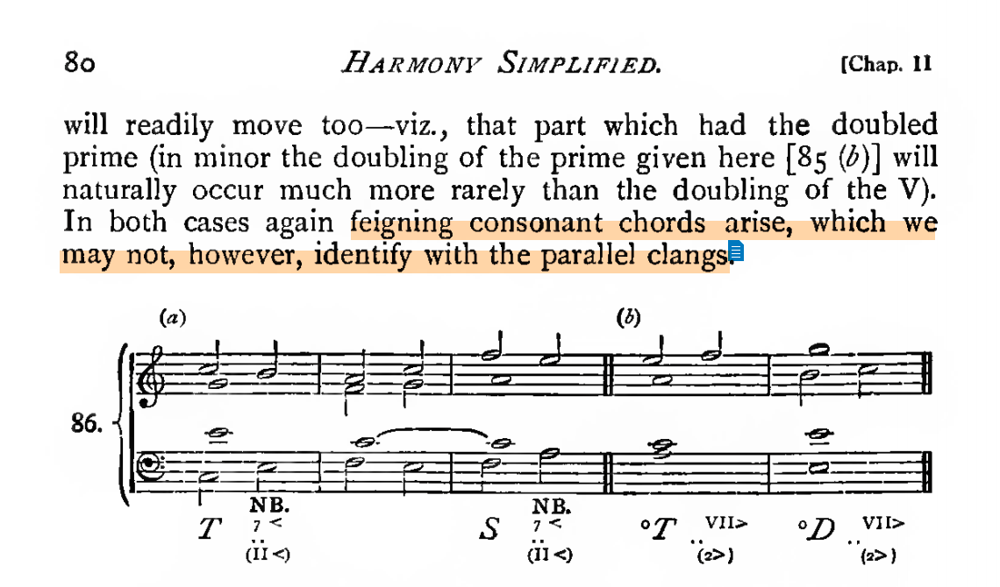
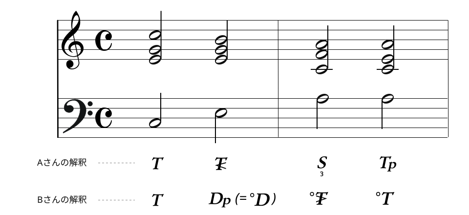

在这篇文章中，有时会出现不是写成“IIIm”，而是“III”或“III级和弦”的表述，但基本上在古典语境中，请认为这里的“III”指的就是“IIIm”和弦。
用“功能”这一概念来对和弦进行分类的“功能和声”，作为和弦进行论的基础，我们在第I章中就进行了介绍。但在那时，特别是那些在自由派之外已经学过乐理的人，可能会感到惊讶： 功能论在音乐理论界其实资历尚浅，不过是一场运动/一个思潮而已；而且存在完全不采纳功能论的书籍。

此外，在来到这第VIII章之前，对于功能论，恐怕每个人或多或少都有过一些不满，或者觉得难以释怀的地方。面对各流派之间截然不同的见解与定义，心中难免会产生疑问：为什么会变成这个样子？
对于那些主张与自己的听觉感受不符的分类的理论体系，肯定有人想要提出异议。或者，更有激情的人，甚至会萌生“我自己来设计一套改良版功能论”的想法。
在这篇文章中，我们将面向这些人，开启一篇分上下两期、探寻功能论的诞生及其演变历程的宏大篇章。
关键角色是 IIIm
在追溯功能论的诞生与变迁时，最关键的角色就是 IIIm 和弦。

在第I章中，我们解释过它兼具 D 和 T 的双重性，因此不同流派对它的分类各不相同。它既不像 VII 级和弦那样是不协和和弦，而是一个极其普通的自然音阶和弦成员，连 IIIm 的功能解释都未定论。如果不弄清楚这一点，就无法绕开它继续前进。反过来说，如果以这个 IIIm 为话题中心来审视各流派的功能论，就能清晰地看到“功能”到底是如何被各派认识和运用的。
那么首先，为了真正正确地理解功能论，我们决定追溯到它的诞生之时。让我们出发开启自绪论以来的第二次“历史探访”吧。
 1. “功能”的起源
1. “功能”的起源
如果问一个熟悉音乐理论历史的人：“功能和声是谁提出的？”，我想大多数人都会提到胡戈·里曼（Hugo Riemann）。他也是从本书绪论起就频频登场的举世闻名的音乐学者。

胡戈·里曼 (1849-1919)
嗨，我们又见面了。我是功能和声论的先驱，幸会。我是卡尔·威廉·尤利乌斯·胡戈·里曼（Karl Wilhelm Julius Hugo Riemann）。

名字好长啊啊啊
但是，如果问他当时究竟是以“何种形式”、“出于何种目的”提出功能和声论的？面对这个问题，可能没怎么关注过的人就多了起来。让我们回到原点——他本人的著作，来更深入地了解功能论吧。
功能的诞生与其定义
里曼提出“功能”，是在1893年的《简明和声学》（Vereinfachte Harmonielehre）一书中。在相当靠前的部分，他这样写道：
Hugo Riemann - Vereinfachte Harmonielehre (p.9)
Es giebt nur dreierlei tonale Funktionen der Harmonie (Bedeutungen innerhalb der Tonart), nämlich die der Tonika , Dominante und Subdominante. In der Veränderung dieser Funktionen beruht das Wesen der Modulation.
完全看不懂德语啊！
因为里曼是德国人，功能的起源是德语也是没办法的事。但这样下去无法展开讨论，我们不妨参考3年后出版的英译本：
There are only three kinds of tonal functions (significance within the key), namely, tonic, dominant, and subdominant. In the change of these functions lies the essence of modulation.
调性上的功能（在调内的意义）只有三种。即：主功能（Tonic）、属功能（Dominant）和下属功能（Subdominant）。这些功能的变化正是转调的本质所在。
Hugo Riemann – Harmony, Simplified (p.9)
在19世纪的时代背景下，能够如此干脆利落地断言“只有三种”，是非常具有开创性的。这被认为是和弦“功能”这一概念的起源。
功能，即和弦的意义。有些人可能会想：“这是什么啊，根本没解释清楚嘛”。但这几个字所承载的分量是极其沉重的。接下来，我们就来细细解读这一点。
里曼眼中的 III 级和弦
在这里，我们立刻来聊聊本次的关键角色——III 级和弦。如今在 D 还是 T 上意见分歧的 III 级和弦，在功能论的始祖里曼那里，究竟是被归类为哪一种呢？在某种意义上，这就像是“标准答案”一样吧。
里曼是怎么想的呢？答案是这样的：

“可能是属功能，也可能是主功能”。万万没想到，理论提出者本人居然做出了“两者皆有可能宣言”！这让人觉得有点“名不副实、货不对板”对吧。这里必须得好好提出质疑了。
质疑者
喂！所有的和弦不是都能用 TDS 来分类吗？这种模棱两可的态度很有问题好不好！！请履行你的说明责任！！😠
里曼
我可是一句也没说过‘和弦的功能仅凭其构成音就能唯一确定’哦。根据‘意义’而非‘构成音’来对和弦进行分类才是功能和声论的本质，含糊不清的反而是使用‘III’这种记号的你们自己的态度。
质疑者
诶………………那是什么意思？
没错，这里隐藏着人们对里曼功能和声论根深蒂固的误解。
被持续篡改的100年
里曼对“功能”的定义其实很简单，那就是“在调内的意义”。然而，正因为其简朴，留下了极大的诠释空间，结果这个“功能”一词，在各流派中几乎被各取所需地任意利用。时至今日百年已过，现状已经变成了：如果不用心拆解，根本分不清功能论中的哪些说法到底源自哪个流派。
因此，在这稍早的阶段，我想先消除一些常见的误解。在《Harmony, Simplified》中，里曼……
- 指出功能有3种类，但从未说过是3个。
- 换言之，从未明确断言过“同一种类功能”的和弦之间属于“同一功能”。
- 从未说过功能是由构成音唯一决定的。
- 更没有把“稳定感”作为分类和弦的标准。
- 压根就没采用过用罗马数字表示和弦的方法。
- 也从未说过同种功能的和弦之间可以任意相互替换。
因此，如果你把功能和声论理解为“根据构成音的共性或声音的稳定性，将和弦功能分为3个，由于同群和弦功能相同，所以可以相互替换”，那么这与里曼最初倡导的功能和声论是截然不同的。这甚至谈不上是过度解读，理论本身追求的目标方向从一开始就是相反的。
那么原本里曼原汁原味的功能和声论，所谓的“原作”究竟是什么样的呢？让我们来切实确认一下。
2. 功能和声论的“原作”
现代我们脑海中浮现的功能论大概是这样的：和弦在音响内部拥有关于“稳定感”或“展开性”的性质，即“T 功能”、“D 功能”或“S 功能”。然后，以此为基准对和弦进行分组，那些组的名字就叫做 T、D、S。

这是一种构图：在声音的世界里存在着 T、D、S 这种抽象的性质、音响特质般的存在，而 I、V、IV 这三者也是从属于它的。
“原作”中 TDS 的样貌
但在现实中，“原作”的概念并非如此。首先是先有 I、V、IV 这样具体的和弦，而分别赋予这三者的别名就是 T、D、S。 然后，再通过与 T、D、S 之一的关系——平行关系、同主音关系、某些音发生转位的关系等——将所有其他和弦联系起来，最终让所有人成为 I、V、IV 的部下。这就是原版构图。
而且这三位君王绝不允许别人直接使用自己的名字。一定会赋予某种附加的称号以示区别。

在原作中，S 并非抽象的存在，而是 IV 这个和弦本身。而 IIm 的功能充其量是 Sp（Subdominant Parallel，下属平行和弦），这绝非 S 本身。它是 S 的变种，是部下。这就是“虽说是同类功能，但绝非同一功能”这句话的含义[1]。
功能有3种，但不是3个
现代我们的印象就像是存在着诸如 T–S–D–T 这样的终止式“框架”，然后从分组中挑选喜欢的和弦填入其中，感觉就像在汉堡店里挑选套餐组合一样对吧。

但原作不同。首先，T、D、S 根本不是框架，而是代表 I、V、IV 三位君王本身的记号。与此相对，VIm、IIIm、IIm 则是分别被冠以 Tp、Dp、Sp 之名的部下。书中明确写道，这三位部下分别“插入”在 T、D、S 的中间。

它们是对终止式“使其更丰富的装饰（enrichment）”，绝不是直接代理主要三和弦。它们的位置是固定的，始终是作为排在主角之后的配角。

考虑到时代背景，这完全是理所当然的。古典界是一个极其严谨的世界，哪怕是 IV 和 IIm，其进行的自由度也是不同的，绝不可能提出“有 T、D、S 的框架，往里面随便填和弦就行”这种流行化的方法论。
芝加哥大学的史蒂文·林斯（Steven Rings）教授在自己的著作中也指出了这种认识上的偏差：
We often think of Riemann’s function theories syntactically, that is, as based on the model progression T–S–D–T. But, as Daniel Harrison, David Kopp, and Alex Rehding note, Riemann’s functional labels are not strongly bound by syntax. (中略) functions signify the individual chord’s “identity in relation to the tonic.”
我们往往倾向于从句法（syntax）角度来理解里曼的功能理论，即认为它是建立在 T–S–D–T 的模型进行之上的。但正如丹尼尔·哈里森、戴维·科普和亚历山大·雷丁所指出的那样，里曼的功能标签与句法并没有强烈的绑定关系。（中略）功能所标示的，是单个和弦“与主和弦关系中的身份认同（identity）”。
Steven Rings – Tonality and Transformation (p.116)
这种表述可能有些晦涩，但“句法（Syntax）”和“身份认同（Identity）”都是理解里曼哲学的关键核心词，我们稍作补充说明。
什么是句法（Syntax）
Syntax 在中文中翻译为“句法”或“统语论”。说到“句法”，大家就会想起英语语法吧。如果把 T、D、S 当作类似于英语语法中 S-V-O-C 那样的“句型模板”，那他就指出这绝非里曼的原意。
什么是身份认同（Identity）
Identity 指的是分辨某物与另一物是不同存在还是相同存在的“同一性/身份”。“用户 ID”的 ID 就来自于 Identity 的派生词“Identification”。 在网络服务中每个人都有不同的 ID，没有任何两个人会重复对吧。同样地，里曼试图给每一个和弦都赋予一个独一无二的 ID 名称。S 和 Sp 虽然属于“同组”，但它们的 ID 是截然不同的。
3. 和弦符号的规格战争
里曼的目标并不是将音乐抽象化为 T、D、S 这种模式。相反，他是审视每一个具体的和弦，赋予其作为具体含义的 ID 名称——认识到这一点，我们首先打破了对里曼误解的一堵高墙。
但是，这也引出了新的疑问：同组之间既不能互相代理，而且还不断增殖出像 Tp、Dp、Sp 这样一堆名字，他到底想干什么？里曼到底想通过功能和声给世界带来什么？
要理解这一点，首先需要了解19世纪德奥理论界的动向。
罗马数字记谱法的崛起
为了脱离具体调性来通用化和弦理论，我们使用了级数名称（Degree names）。如今这已经成了理所当然的事情，难以想象没有它的理论体系，但这在普遍渗透其实是19世纪的事，比巴赫和莫扎特还要晚。
最早引入罗马数字记谱法的是德国的格奥尔格·约瑟夫·福格勒（Georg Joseph Vogler，1749 – 1814），随后同样来自德国的戈特弗里德·韦伯（Gottfried Weber，1779 – 1839）通过加入“小调和弦用小写字母表示”等改良使之更加便利，推动了其普及[2]。
 Gottfried Weber – THEORY OF MUSICAL COMPOSITION (p.289)
Gottfried Weber – THEORY OF MUSICAL COMPOSITION (p.289)
而在19世纪中叶的奥地利极具影响力的音乐理论家、布鲁克纳的老师西蒙·塞希特（Simon Sechter，1788 – 1867）同样采用了罗马数字记谱法，并传承给了同乡的理论巨擘勋伯格（Arnold Schoenberg，1874 – 1951）和海因里希·申克（Heinrich Schenker，1868 – 1935）。随着他们理论的名声大噪，罗马数字记谱法发展成了一股庞大的势力[3]。
位置与意义
在这样的世界局势中，里曼没有使用罗马数字。因为他已经为每个和弦赋予了一个“ID 名称”，根本不需要在此之上再附加记号。他不仅在理论著作中，在实际的作品分析著作中也完全不使用罗马数字。

里曼对贝多芬第5号钢琴奏鸣曲（第一乐章）的分析在此希望大家注意的是，“罗马数字记谱法”与“功能符号”所承载的内容是截然对立的。前者传达的是调内的“位置”，而后者传达的是调内的“意义”。

打个比方，罗马数字记谱法是将构成音符号化的“表音文字”，而里曼记法则是将调内意义符号化的“表意文字”。
表音文字与表意文字
例如，“II”这个记号，优先向我们传达的是位置。它的具体意义并未包含在记号中；当我们想知道其意义时，需要我们手动去解读。

II级和弦变成了大和弦……这意味着它是从属调借来的，是走向V的重属和弦（Double Dominant）！
与此相对，里曼的“”这个记号，优先传达的是其解读后的结果。音的位置并未直接体现在记号中；当我们想知道位置时，需要我们手动去还原。
“”意味着是属和弦的属和弦……因为是针对V的属和弦，所以是II级和弦！
双方各有利弊。然而，“从意义确定位置”是必然能够做到的，但“从位置确定意义”却有可能产生歧义。“III级和弦”正是最典型的例子。在这个层面上，“表意文字”更为优秀，我想里曼正是看到了这一价值。
里曼拒绝了德国前辈们所推广的罗马数字记谱法。他在功能和声论中所期望实现的，正是摆脱罗马数字记谱法，将他心目中理想的“基于表意文字的符号体系”打造成世界标准吧。
在现代，某些历史悠久的流派中经常将重属和弦记作“V/V”等，可以说正是继承了这种“表意文字”的理念。而完全的“表音文字”风格在广大普通人群中深入人心，也隐约反映出了“更单纯、更易学的东西被大众所选择”的淘汰历史。
与维也纳乐派的交锋
在和弦符号化方面，究竟是“罗马数字”合适，还是“功能符号”合适？将里曼与刚才提到的五个人排在一起，这个时代“和弦符号标准之争”的格局就清晰浮现了。
在里曼看来，本应在先辈推广的“表音文字”彻底普及之前，发布自己坚信更为优秀的“表意文字”体系来改写历史。然而作为后辈的申克与勋伯格却对里曼不屑一顾，继承了同为奥地利人的大前辈塞希特的方针，采用了罗马数字记谱法。这对里曼来说想必是个沉重的打击。

真可谓是孤军奋战。对里曼颇有研究的音乐学者丹尼尔·哈里森评价里曼：“他将自己描绘在了一场与数字低音、罗马数字记谱法以及各种‘旧式’和声系统的宏大斗争之中”[4]。
韦伯之后的这套基于罗马数字的理论体系被称为“Stufentheorie”（音级理论 / 级数理论），常与里曼的“Funktionstheorie”（功能理论）相对立。在英文维基百科关于功能和声的词条中，便介绍了存在着“德国功能和声”与“维也纳功能和声”两大流派。
申克的风格
申克在遵循维也纳流派塞希特的惯例的同时，在级数旁边加上变音记号等，进行了让人联想到100年前福格勒的定制化改良。
申克将里曼等人的势力视为强劲对手，甚至把里曼称为“蔓延在德国的最危险的音乐细菌”[5]。
勋伯格的风格
勋伯格最质疑的，是将和弦的功能种类精简到 T、D、S 三种的做法[6]。在借用里曼想法的同时，他构想了“调域（Region）”的概念，赋予 III 为“中音调域（Mediant）”、VI 为“下中音调域（Submediant）”、II 为“多利亚调域（Dorian）”等独立地位，并将其与罗马数字结合使用，以此来抗衡里曼。

这张“调域图表（Region Chart）”非常引人入胜，但在里曼看来简直无法容忍。据说里曼强烈批判勋伯格的理论是：“塞希特保守的作曲规则，与从根本上否定它的规范之间，所调配出的一种诡异的大杂烩！”[7]。
理论家们竟然进行过如此剑拔弩张的争论，可能让人感到有些意外；但正是这样的质疑与探讨，推动了音乐理论的发展。
Check Point
在里曼的功能和声论中，T・D・S 并不是所有和弦最终归属的“分类终点”，而只是将 I・V・IV 符号化的“分类起点”。其他和弦都带有附加记号，并具有固定的终止式配置形式，因此“同类功能”绝不等于“同一功能”。 虽然如今用罗马数字表示所有和弦的方式更为普及，但以 T・D・S 为基础的各种符号、构建一套基于和弦意义的分析符号体系，才是里曼所描绘的愿景。
如今，基于“意义”的和弦记号仅在部分流派中局部使用；而里曼构想的记号也经历了随意的篡改，到了面目全非的程度。
4. 句法与语义
借由“表音文字”与“表意文字”这一对比结构，里曼的目的已经浮现出来了。然而，对于我们这些对前者——罗马数字体系——过于熟悉的人来说，要理解“表意文字体系”的优点，其实是相当困难的。
因此，我们在这里再次把话题拉回关键角色“III 级和弦”。就用这个和弦，来理解“表意文字体系”究竟是一种怎样的思考方式。
功能和声中对 III 的解释
首先在原作中，III 级和弦是属功能的同伙，正如前文所说，最初是以“属和弦平行（Dominant Parallel）”这个名目被介绍的。
但另一方面，这个“E–G–B”的构成音，也可以通过将主和弦的根音降低半音这一变形——里曼称之为“导音变换（Leading-tone Change）”——来获得，而里曼为这种情况另授了一个记号。


C–E–G 变成了 B–E–G，再按三度堆叠重新排列，就得到了 E–G–B。
这个“”（即 T 的导音变换）当然也是 T 的部下，而它与 D 群的部下“Dp”之间，被说明为“apparently identical”，也就是“在表面上看完全同一”[8]。

“Identical（同一的）”这个词在此登场了。它正是前文出现过的“Identity（身份认同）”的形容词形式。而“apparently identical”这句话的背后，同时隐含着“内里绝非同一”的意思。
III 有两个人
也就是说，里曼的想法是这样的：“III”存在两个人。这两位外表完全一样，单看任何一个都无法区分，但只要观察它们连同前后关系在内的行为表现，就能很清楚地看出它们是不同的存在。功能和声论是一门观察内里（=音的意义）而非外表（=音的结构）的理论，因此要为这两位分别赋予“”和“”这样不同的 ID，以示区别。维也纳乐派只看外表就把它们统统归结为“III”，而我则会严格精密地加以识别与分类。


文章开头提到的“III 这种记法很含糊”，到这里就衔接上了。在里曼看来，问题并不是“III 属于哪一边无法明确分类”，而是“那帮家伙把两个和弦拢在一起都叫 III”。
重视语境的系统
仔细阅读原著，这一点可以清楚地确认。在第 80 页，里曼明确指出：和弦从 I 进行到 IV 的途中偶发生成的 IIIm 和弦，与作为属和弦平行的 IIIm不能视为同一。


这里再次出现了“identify（同一性的认定）”这一表述，这一点也请留意。对里曼来说，“”与“”是拥有不同身份认同的两个不同和弦，把它们合称“III”是不可容许的行为。
里曼意图构建这样一种“语境依赖型”的理论，这一点在前文引文中出现过的亚历山大·雷丁的著作里也有论述。
Depending on the musical context, it would be considered either as a modification of the same function(in G major, T–), or as the modification cation of a different function (in G major, T–).
(中略)
The harmonic function is not itself a chord, but an interpretation of a chord, which tells us how the chord relates to its tonal-metrical context.
视音乐语境而定，这既可能被看作同一功能内的变化（），也可能被看作向另一功能的变化（）。
(中略)
所谓和声功能，并不是和弦本身，而是对和弦的一种解释；它传达的是该和弦与调性上、节拍上的语境如何关联。
Alexander Rehding – Hugo Riemann and the Birth of Modern Musical Thought (Kindle位置No.636-637 / 646-647)
顺便一提，这本书对上述“语境依赖性”略带批判。的确，也可以把它理解为“同一个和弦竟然能被解释成两种”，从而给出负面评价；但我想，里曼是把它当作“两种能够被清楚地区分”来正面看待的。
语境依赖是坏事吗？
例如，假设 A 和 B 两人用里曼记法分析了同一首曲子。假设由于细微的诠释差异，两人标注的记号出现了分歧。假设出现了那种在级数名称下不会发生的、“因语境依赖而导致的记号标注偏差”。但把诠释的差异以记号的形式显现出来，难道不是更好的事吗？


因为我们正可以以此为基点，就曲子的诠释展开讨论。乐曲分析本来就该是这样的东西。
用级数名称的话，确实谁都能标出相同的记号。但这绝不意味着级数记法更优秀。说得难听些，那可以说是一种把分析者内心诠释的差异“遮蔽”起来的记法。
即便在今天，我们分析作品时也常有“虽然能还原成和弦名，但这个和弦究竟是怎么产生的？”这样的情况吧。真正意义上的音乐分析，正是从这里开始的。里曼作为教育者，或许也有不希望学生认为“标上级数，分析就算完事”的一面。
作为“函数”的功能和声
稍微跑个题：中文里译作“功能”的 Function 一词，还有另一个数学用语“函数”的含义。而创造这个词的人，其实也是与里曼同为德国人的莱布尼茨。
里曼之所以选用 Function 这个词，或许也包含了这种与数学术语 Function 的双关意。实际上，把功能和声论的记号还原成音的操作，确实有点计算的味道[9]。
 示意图
示意图
“”这个函数，拥有“主音”这个参数。向其中代入“c 音”这个值，经过一阵运算，就得到了（b, e, g）这个和弦。“”这个记号就是这样表现“计算过程”的符号，因此我们也可以反过来代入构成音，逆算出这个和弦源自（c, e, g）。这是罗马数字记法无法做到的事情。
在这一点上，同样能感受到那种追求揭示“内里”而非“外表”的记号体系的意识。
作为语义学的功能和声
理论所应揭示的，不是音乐的结构句法，而是音乐的语义——这是向级数名称提出的诘问，因此对于使用它的现代我们而言，也绝非事不关己。
抛给百年后的我们的问题
例如这样一个几乎不会被摆上讨论桌的问题：皮卡第三度终止中的 VI，与副属和弦中的 VI，能说是“同一的”存在吗？又或者，因多利亚调式借用而引入的 II，与作为重属和弦的 II。它们连同叠在上面的调式在内，都是“结构上同一”的。

这并不只是思想问题，而是与实践相关的问题。首先它们的“后续进行的倾向”就不同，因此在构建进行法则的理论时，是否承认这一点会关系到体系的结构。再者，即兴演奏时乐句的用法也会明显不同吧。用一套把这些理所当然地无视掉的记号体系，真的好吗？说的就是这个。
更何况在分析的时候，搞不清背景音阶的情况也是家常便饭。如果仅从“结构”出发把和弦符号化，那么究竟会有多少个和弦被换算成同一个记号呢……？
由此让人想起的，正是在第 VIII 章中同样讨论过的 Blackadder 和弦。aug 的低音转位、半减和弦的变形、属九和弦的变形……把这类语境剥离之后再进行符号化的系统，确实是一套“高效”的体系。但那能称得上是“音乐性”的体系吗……？

这样真的能说是“分析了音乐”吗？如果里曼活到今天，说不定会兴高采烈地为它们一一赋予各自的符号吧。这样一想，“构成音相同的和弦都给出同一个记号，这才有一致性，才好”——这个我们一直当作理所当然的前提，是不是反而让人觉得并不尽然？
在非和弦音与半音阶技法使音乐日益复杂的浪漫派时代，我想里曼对那种“静态的符号化”是抱有忧虑的。而且他不只是提出批判，还认认真真地构建了一整套体系作为替代方案。这份热情令人惊叹。
里曼真厉害
与单纯的数字编号相比，把意义符号化的体系构建，是需要设计能力的艰巨工作。里曼确实也在设计层面做了考量，比如为出现频率高的和弦另行准备简略写法。虽然到头来，记号还是变得复杂了……
 p.102
p.102
尽管如此，在罗马数字记法尚未普及的年代，他一边承受周围的抨击一边独自做着这件事——这一事实甚至让人感到敬畏。或许也有其他理论家做过类似的尝试……但无论如何，在思想与愿景方面，里曼确实拥有超乎常人的东西。
对不起，里曼
质疑者
也就是说……“III 级和弦可能是 D 也可能是 T”这句话的真意，并不是把 III 的存在“含糊化”，反而恰恰是对 III 做了更“严格”的分析之后的结果？
里曼
正是如此。你们嫌我造的记号麻烦，转而选择了塞希特和勋伯格那帮人的罗马数字记法，还只顺手拿走了 T、D、S 三个字母……甚至还说我该负责判定那个“III”究竟算 D 还是 T？
质疑者
总觉得……真是抱歉……
这件事其实非常重要。读过第 I 章功能论的人里，肯定也有人心想：“既能当 D 又能当 T，这算什么啊，也太松散了，给我认真点”。但真相恰恰相反——“只要构成音相同就是同一个和弦，因此给一个记号就够”——把这种前提毫不抗拒地全盘接受的我们现代人，才是在用松得多的方式把握音乐，这一点让人醒悟。
关于 III 级和弦的结论
因此，对于“IIIm 的功能是什么？”这一问题，“原版功能和声论”一方给出的回答是这样的：
你们维也纳乐派的赞同者们，轻视了我们“语义论”的思想，在构建理论时选择了从“结构”而非“意义”出发来给音编码。“III”就是由此产生的、不含音结构以外任何数据的“空壳”。其中并不存在“意义”的信息。是你们自己把它丢弃的。
当“III”被赋予一定的语境时，我们能够从中读出“”或“”的功能，但我们绝不是认为“III 拥有两种功能”。在功能和声的体系内，并不存在罗马数字那种和弦。只是当语境被给出，原本是“空壳”的“III”便带上了单一的意义。如此一来，我们也能读出那个意义。就是这么回事。
由于这段话里不免掺入了里曼的怨气，我们改用更中立的视角重述一遍：
“功能符号”与“罗马数字符号”本来就是“格式不同的和弦数据”。前者是连同语境一并保存下来的数据，结果上也包含了构成音的信息；后者只包含构成音的信息。因此，从“级数”未必能够确定“功能”。这与从“和弦名”无法确定“声部排列（Voicing）”是同一回事，因为在抽象化的过程中，那份数据已经丢失了。
对于用罗马数字表示的和弦与用功能符号表示的和弦并不一定一一对应这一点，我们应当抱有这样的认识：“数据格式本就不同，所以这是理所当然的”……说的就是这个。
好了，在理解了功能和声论的“原作”究竟是什么样的东西之后，前篇就到此结束。让我们再来复习一遍里曼“原作”的要点：
- 对里曼来说，T、D、S 就是罗马数字记法中 I、V、IV 和弦本身的记号。
- 里曼确实把和弦分成了 T 群、D 群、S 群三组，但在其下层还准备了 这样的各种记号，那才是里曼眼中的“功能”最小单位。
- 里曼的构想是把和弦连同意义一并符号化，与罗马数字记法在本质上是互不兼容的，两者处于争夺分析记号标准地位的关系。
- “因语境不同而标出的记号不同”这件事，究竟是好是坏取决于看法。要判定哪种记号体系更优秀并不容易。
从这里开始，某种意义上算是忏悔的时间。后人是如何对这套功能论进行脱胎换骨的改造、随心所欲地加以利用的——我们将去确认这段“原作改编”的历史……